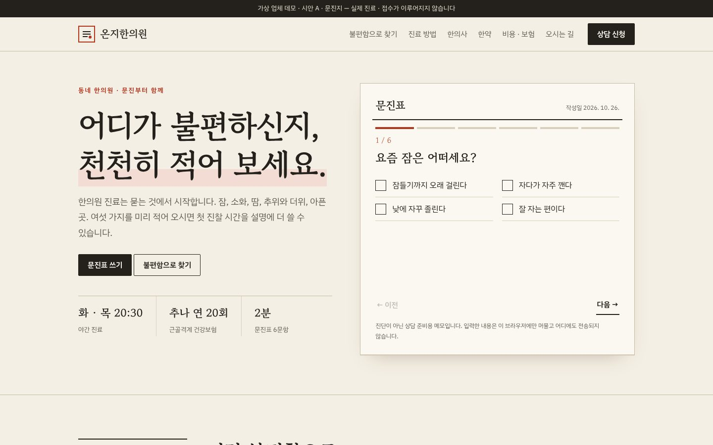
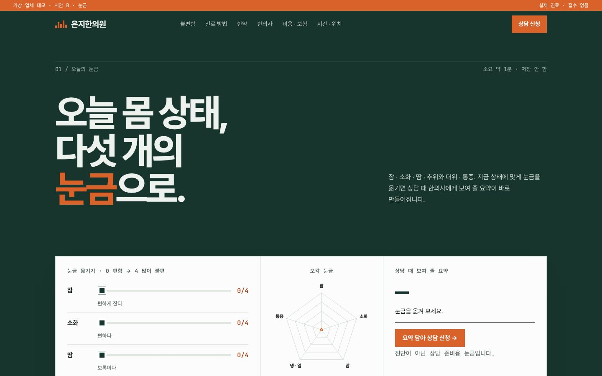
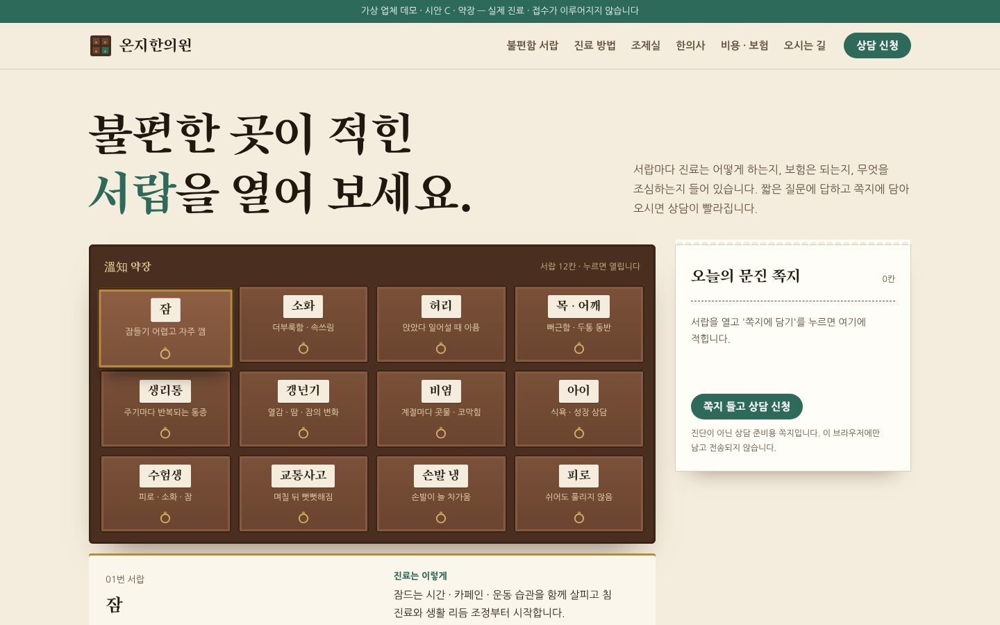

조합 1 선택 반영(이슈 #107) · 가상 업체 데모 · 2026-10-26
같은 문진 준비,
세 가지 다른 첫인상.
세 시안 모두 불편함에서 시작하는 문진 준비형입니다. 한의원 진찰의 "묻기"를 미리 하도록 잠 · 소화 · 땀 · 추위와 더위 · 통증을 답하면 상담 때 보여 줄 요약이 만들어지고, 그 내용이 상담 신청(L2) 칸에 자동으로 들어갑니다. 건강 정보는 따로 동의할 때만 보내도록 동의를 나눴고, 모바일 하단 바로가기 4버튼(전화 · 문진 · 길찾기 · 카카오)을 세 시안에 넣었습니다.
사진: 한의사 프로필 2장 · 공간 3장은 사진 칸만 잡아 두었습니다. GPT 사진 지시서의 파일 이름으로 images/에 넣으면 세 시안에 바로 표시됩니다.

A · 문진지 · 추천
쌀종이 · 먹 · 주홍. 첫 화면의 종이 문진표를 한 문항씩 체크하면 "問診 完了" 낙관이 찍히고 요약이 나옵니다. 불편함 8가지는 번호 색인을 펼쳐 보는 지면형.
시안 열기 →

B · 눈금
솔잎 · 안개 · 감빛. 다섯 개의 눈금을 옮기면 오각 그래프가 바뀌는 스위스 그리드형. 진료 방법은 한 표, 한약은 여섯 단계 타임라인, 진료 시간은 주간 막대로.
시안 열기 →

C · 약장
호두나무 · 한지 · 옥색 · 황동. 불편함이 적힌 약장 서랍 12칸을 열어 짧은 질문에 답하고 "문진 쪽지"에 담는 모자이크형. 진료 방법 타일, 조제실 약봉투 띠.
시안 열기 →
디자인 지문
| 시안 | layout | hero | typePair | palette | signature |
|---|
| A · munjin | editorial (지면 · 번호 색인) | statement + paper questionnaire | Gowun Batang + IBM Plex Sans KR | rice paper · sumi ink · cinnabar | 한 문항씩 체크하는 종이 문진표 → 낙관 · 요약 |
| B · pulse | swiss-grid (12단 · 큰 숫자) | interactive sliders + radar | Pretendard + JetBrains Mono | pine · mist · persimmon | 다섯 눈금 슬라이더와 오각 그래프 |
| C · yakjang | mosaic (서랍 · 타일) | collage drawer wall | Song Myung + Nanum Gothic | walnut · hanji · jade · brass | 약장 서랍 12칸 → 문진 쪽지 담기 |
업체명 · 의료진 · 주소 · 금액은 예시이며 사진은 AI 생성 예시로 표기합니다. 완치 · 기간 단정 · 경험담 · 다이어트/보약 효능 · 할인은 쓰지 않았고, 진료 방법마다 생길 수 있는 반응과 한약 복용 주의를 고지합니다. 첩약 시범사업 · 추나 보험은 조건만 안내합니다(rules/medical.md). 상담 폼은 접수하지 않는 데모입니다.
완성할 시안 선택
레퍼런스 비교 보고서 ↗ · 제출한 조합 보기 ↗